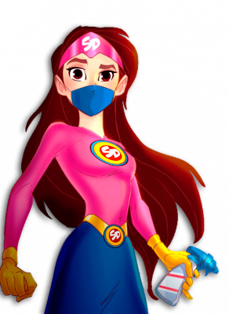

¡Hola! Recuerda que durante la Nueva Normalidad con el semáforo en rojo hay que estar en casa y es el momento de sacar lo mejor de nosotros para vencer el reto.
Mantente ocupado en actividades productivas y positivas, comparte tiempo con la familia, colaborando en las tareas del hogar, practica la tolerancia y respecto.
Pero si crees que necesitas algún consejo o apoyo, llama a la Línea de la Vida:
800 911 2000

¡Si te cuidas tú, nos cuidamos todos!
Cuidemos nuestra salud mental
Irritabilidad
Salud mental ante COVID-19
Salud mental de niños
Apoyo emocional
En tiempo de contingencia hay que sumar. Si te sientes preocupado, triste, ansioso o enfadado, no dudes en contractar cualquiera de las siguientes líneas de atención.
 @LaLineaDeLaVidamx
@LaLineaDeLaVidamx
 @LineaDe_LaVida
@LineaDe_LaVida